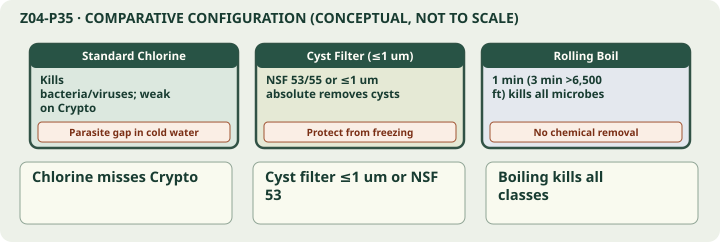

Z04-P35 · Water · New manuscript
Select certified filters for Giardia and Cryptosporidium cysts
Choose effective parasite barriers where standard chlorine or iodine disinfection alone is unreliable.
When it applies · Surface water in wilderness, rural or flood-affected areas where wildlife or livestock can shed protozoan cysts.
Equipment · Filter independently rated for cyst reduction (absolute ≤1 micron or NSF/ANSI 53/55) or boiling setup.

Actions
- Recognize that Cryptosporidium oocysts strongly resist routine chlorine bleach and iodine doses, and Giardia cysts also resist brief cold-water chlorination.[W19, W20, W10]
- Select boiling or a filter explicitly certified for cyst reduction (absolute pore size ≤1 micron or NSF/ANSI Standard 53/55) to remove parasites reliably.[W19, W20, W02]
- Combine cyst-rated filtration with chemical disinfection when viral risk is also present (such as near human sewage or heavy-use corridors).[W04, W20]
Failure recognition · Relying solely on standard chlorine drops in cold stream water where Cryptosporidium oocysts survive treatment.[W20, W05]
Verify · Confirm the filter label explicitly states cyst removal or absolute ≤1 micron rating and that seals and cartridge are intact.[W19, W20, W28, ED]
Stop or change course · If the filter lacks cyst verification or suffers seal or freeze damage, boil the water instead or switch to a known potable supply.[W02, W20, W28]
Evidence and editorial notes
- W02 · CDC · How to Make Water Safe in an Emergency (2024-09-19)
- Section: Boil > Steps for boiling water · Conditions: Microbiologically suspect water with acceptable chemical source; portable heat and safe vessel
Support: Clarify cloudy water first. Rolling boil for one minute; above 6,500 feet for three minutes. Cool and cover in sanitized containers.
Limitations: Does not remove dissolved metals, nitrates, fuel, or cyanotoxins. · Conflicting evidence: Older Track B B009 omitted the 6,500 ft threshold; CDC threshold governs.
Editorial note: Require explicit timer verification after rolling boil starts. · Specialist reviewer: Drinking-water safety and public health
Primary source · checked 2026-11-24 - W04 · CDC · Water Treatment Options When Hiking, Camping, or Traveling (current web edition)
- Section: Water treatment methods > Filter and disinfect · Conditions: Untreated backcountry water; suitable devices and directions
Support: Filter capability varies. Filtering then disinfecting addresses gaps left by typical portable filters. Follow both manufacturers' directions.
Limitations: Effectiveness depends on pore rating, cartridge integrity, and manufacturer-verified test standards. · Conflicting evidence: None; consumer claims outside NSF/EPA standards are excluded.
Editorial note: Used to require multi-barrier pairing rather than relying on one filter alone. · Specialist reviewer: Drinking-water treatment specialist
Primary source · checked 2026-11-24 - W05 · CDC · How to Make Water Safe in an Emergency (2024-09-19)
- Section: Disinfect; Using light · Conditions: Matched product, concentration, dose, contact time and source condition
Support: Chemical disinfection is less dependable against some parasites. UV needs clear water and a correctly used device.
Limitations: Cold temperature and organic turbidity reduce chemical efficacy and UV penetration. · Conflicting evidence: None; exact manufacturer label governs dose and wait time.
Editorial note: Prohibits improvised chemical dosing when labels are absent. · Specialist reviewer: Drinking-water treatment specialist
Primary source · checked 2026-11-24 - W10 · CDC · Water Treatment Options When Hiking, Camping, or Traveling (current web edition)
- Section: Disinfect; Who should avoid water disinfected with iodine · Conditions: Backcountry water with acceptable chemical source; label-directed treatment
Support: Avoid iodine-treated drinking water during pregnancy, with thyroid problems or known iodine hypersensitivity. Chlorine and iodine are unreliable against some parasites.
Limitations: Not intended for prolonged multi-week use even in healthy adults; check product label. · Conflicting evidence: None; aligns with CDC backcountry guidance.
Editorial note: Mandates user medical screening before choosing iodine disinfection. · Specialist reviewer: Drinking-water safety and wilderness medicine
Primary source · checked 2026-11-24 - W19 · CDC · Preventing Giardia Infection (current web edition)
- Section: Preventing Giardia Infection > Backcountry Water · Conditions: Untreated surface water in wilderness and rural watersheds
Support: Giardia cysts survive in cold freshwater and resist brief or low-dose chlorine exposure; boil or use a filter specifically rated for cyst removal (e.g., 1 micron absolute or NSF 53/55 cyst reduction).
Limitations: Pore size alone does not protect if cartridge seals leak or freeze-crack. · Conflicting evidence: None; underscores why chemical-only treatment has parasite limits.
Editorial note: Clarifies why filter micron/NSF ratings matter for protozoa. · Specialist reviewer: Drinking-water microbiology and public health
Primary source · checked 2026-11-24 - W20 · CDC · Preventing Cryptosporidium Infection (current web edition)
- Section: Preventing Cryptosporidium Infection > Water Treatment · Conditions: Surface water impacted by wildlife, livestock, or runoff
Support: Cryptosporidium oocysts are highly chlorine-tolerant; boiling or certified cyst-rated filtration (absolute <= 1 micron or NSF 53/55) is required rather than standard chlorine alone.
Limitations: Standard bleach or chlorine tablets at routine doses do not reliably inactivate Cryptosporidium. · Conflicting evidence: Clarifies gap left by single-barrier chlorine disinfection.
Editorial note: Core evidence for filter-plus-disinfect multi-barrier design in Z04. · Specialist reviewer: Drinking-water microbiology and public health
Primary source · checked 2026-11-24 - W28 · CDC · Water Treatment Options When Hiking, Camping, or Traveling (current web edition)
- Section: Water Treatment Options > Freeze Damage and Maintenance · Conditions: Hollow-fiber and ceramic filters used in freezing or near-freezing temperatures
Support: Freezing water inside a wet filter element can crack hollow fibers or ceramic pores invisibly, allowing untreated water to bypass the barrier; keep wet filters above freezing or replace suspect elements.
Limitations: Internal crack failure often shows no visible external leak. · Conflicting evidence: None; critical cold-weather filter failure mechanism.
Editorial note: Drives cold-weather filter protection and failure-recognition cards. · Specialist reviewer: Drinking-water treatment and cold-weather operations
Primary source · checked 2026-11-24
Source lineage · CDC Giardia, Cryptosporidium and filter guidance; new manuscript · Classification · New manuscript.